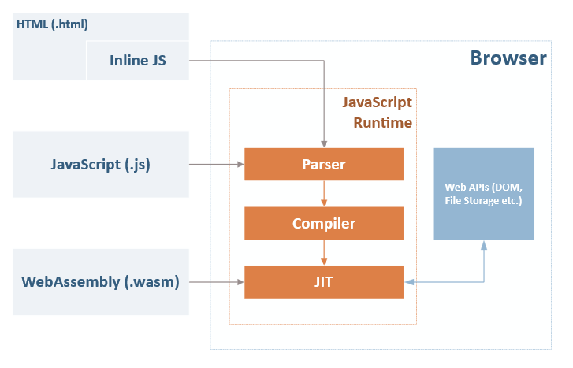
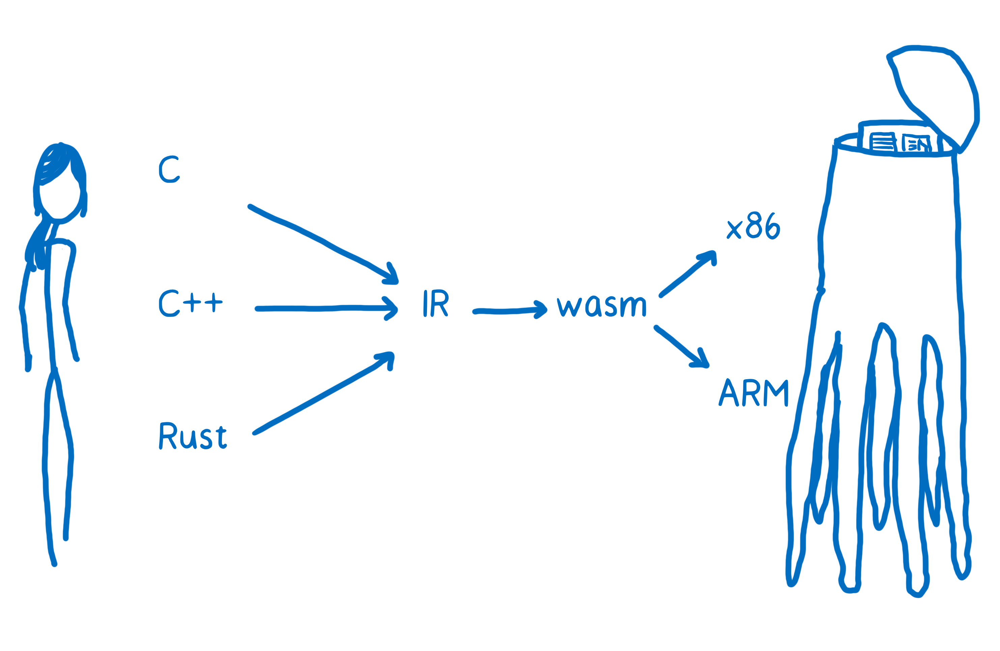

New language run on mordern web browsers

- WebAssembly != Language that compiled to JavaScript
- WASM run directly on JIT compiler
Hello World
(module
(func (result i32)
(i32.const 42)
)
(export "helloWorld" (func 0))
)
Compilation target for low-level languages
